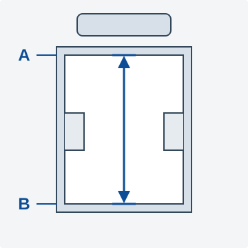

How to Measure Your Truck Bed for a Tonneau Cover
Measure the right bed surfaces, separate nominal size from tape readings, and record the rail and tailgate details a tonneau cover needs.
In this guide
Measure the cargo box itself
Park on level ground, secure the truck, and clear a straight measuring path along one side of the bed. Close the tailgate. The front wall of the cargo box is the bulkhead. It is separate from the back of the cab. Hold the tape between the inside faces of that bulkhead and the closed tailgate, keeping it straight rather than following a diagonal.
This basic inside-bed measurement follows WEATHER GUARD's bed-measurement guidance. Take a photo showing where the tape begins and another showing its endpoint. Repeat the measurement before putting the tape away. If a liner prevents you from reaching either surface, record what the tape actually touches. A measurement against an added liner should not quietly become a bare-bed dimension.
Do not measure the truck's overall length, the outside bed rails, or the distance to the end of a lowered tailgate. Those numbers answer different questions. Likewise, measuring between the wheel wells gives cargo width, which cannot identify the cover length.

Keep the label and measurement together
Truck manufacturers use nominal bed names. Those names need not equal the inside measurement converted into feet. Ford's preliminary 2024 F-150 specification, for example, lists a 5.5-foot Styleside bed with an inside floor length of 67.1 inches. That is a naming example from one model year, not a tolerance for other trucks. See Ford's cargo-capacity specifications.
Write two separate entries: the manufacturer's bed name and your tape reading. Avoid rounding the reading to make it match a product title. In ordinary arithmetic, 5.5 feet is 66 inches, while 5 feet 5 inches is 65 inches. Decimal feet and feet-plus-inches are different formats. If a listing uses both formats inconsistently, send the discrepancy to the seller.
A short bed on one model is not a universal size shared with every other pickup. Use the full model name with the nominal size. A cover listing for a different truck does not become compatible because its headline measurement looks close.
Record what occupies the rails
Take a photo looking down each upper bed rail. Include the underside where clamps or brackets would attach. List a drop-in liner, rail caps, factory cargo tracks, a rack, a toolbox, and any other accessory you plan to keep. Note a split or multifunction tailgate and storage boxes built into the bedsides.
Length describes the opening. It does not show whether the cover hardware can reach its mounting surface. OEDRO's Tacoma cover listing expressly requires the specified bed-rail configuration and says cargo racks must be removed. Those are separate conditions even when the bed length matches. For that truck, the Tacoma cover guide explains what to photograph.
Do not remove useful equipment merely to imitate a product photo. Decide which equipment must remain, then choose a documented combination. A cover and rack can each fit the vehicle yet need the same mounting space.
Resolve disagreements before ordering
If the selector, title, and written application disagree, save the selected option and ask which description applies to its part number. An older year range in a URL is not a fitment specification. A page may also group several cover styles, making a generic page answer insufficient.
Send a short, complete inquiry: year, make, model, body version, cab, nominal bed size, measured inside length, tailgate type, installed rail accessories, product link, and selected style. Attach the endpoint and rail photos. Ask the seller to identify the exact matching item and any required hardware or accessory removal.
Keep that response with the order. It gives you something concrete to compare with the carton label and instructions when the cover arrives. Once the application is resolved, use the soft-versus-hard cover guide to choose an opening layout that suits the cargo you carry.
Parts in this guide
Shop tonneau covers OEDRO 5.5ft Tri-Fold Tonneau Bed Cover for 2015-2026 Ford F150 F-150 (Excludes Raptor Series) – Waterproof, Durable, Easy InstallationView on OEDRO
OEDRO 5.5ft Tri-Fold Tonneau Bed Cover for 2015-2026 Ford F150 F-150 (Excludes Raptor Series) – Waterproof, Durable, Easy InstallationView on OEDRO OEDRO Hard Tri-fold 5FT Tonneau Cover Fold Truck Bed Covers Compatible with 2016-2023 Toyota Tacoma (Excl. Trail Edition) with 5 Feet Bed with Tacoma Bed RailView on OEDRO
OEDRO Hard Tri-fold 5FT Tonneau Cover Fold Truck Bed Covers Compatible with 2016-2023 Toyota Tacoma (Excl. Trail Edition) with 5 Feet Bed with Tacoma Bed RailView on OEDRO